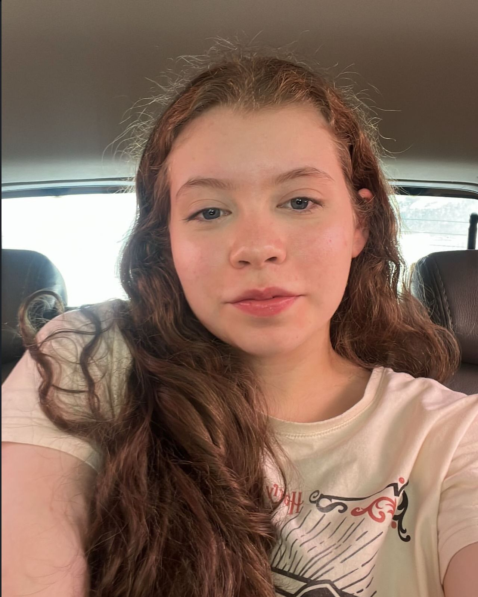
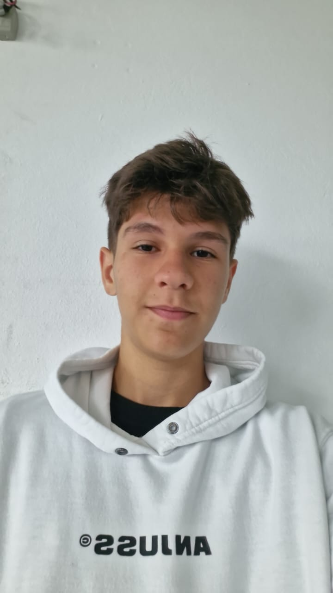
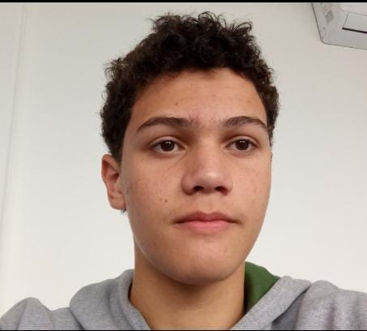
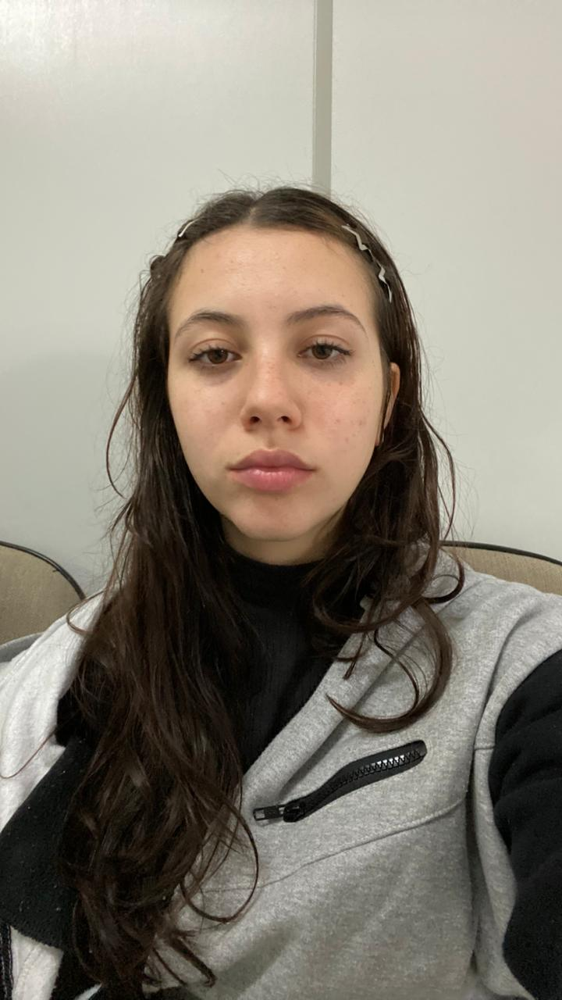

Sobre nós
Somos um grupo de estudantes do Instituto Federal Catarinense Campus Araquari, inicialmente esse projeto seria apresentado apenas como trabalho na matéria de Projeto Integrador, mas também será utilizado como trabalho de apresentação do Painel Integrador, na SEPE (semana de ensino, pesquisa e extensão).
O nosso projeto consiste em:
-
- Ajudar as pessoas a entenderem o quão importante e necessário é a saúde física e mental em nossa vida, principalmente a longo prazo.
- Contribuir com informações, sugestões, dicas e implementações que auxiliam na melhora e evolução diária das pessoas, nas áreas da saúde e bem estar, físico e mental.
Nossa equipe:
-
Anna Clara Moretti Pavanello
- Coordenadora geral do projeto, Anna pesquisou, produziu textos e revisou o site.
-
Guilherme Bloemer dos Santos
- Programador, Guilherme programou, trabalhou no funcionamento do site e ajudou na aparência do mesmo.
-
Kauan Rosa de Oliveira
- Diretor Programador, Kauan foi o principal programador do site, participando, em sua maioria, no funcionamento do site e do sistema de páginas.
-
Nicolas Martins Paiva
- Secretário de reunião, Nicolas pesquisou, argumentou e produziu conteúdos para o site, além de registrar o que era feito em cada encontro.
-
Valentina Damas
- Líder do grupo, Valentina trabalhou na organização geral do trabalho, na garantia de que o trabalho funcionaria de forma adequada.
-

Anna Clara
Coordenadora geral do projeto
-
Guilherme Bloemer
Programador
-

Kauan Rosa de Oliveira
Diretor Programador
-

Nicolas Martins Paiva
Secretário de reunião
-

Valentina Damas
Líder do projeto